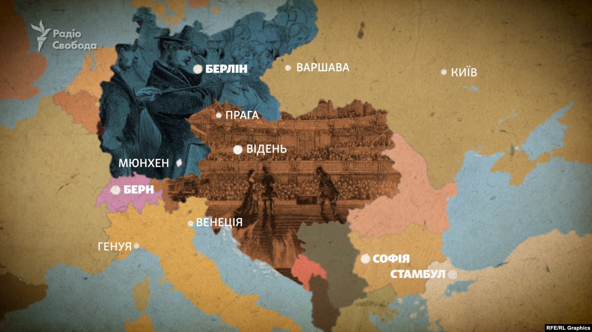

Лесі Українка : невідомі факти
Протистояла російському імперському колоніалізму
Леся Українка вважала, що ««братні народи» просто сусіди», які не мають
спільних інтересів і їхнє майбутнє – жити окремо.
Письменниці було часто нестерпно повертатися із поїздок Європою в Російську
імперію, в «се тюремне життя».
Через цензурний та жандармський нагляд
Лариса Косач навіть думала зректися російського громадянства й отримати
австрійське: «Готова б хоч в абіссінське (Ефіопська імперія ‒ ред)
горожанство перейти, аби не бути російською підданою, бо підданства того
зовсім не вважаю ні за яку національну ознаку (скоріше за національне
нещастя»). Леся Українка писала, що Відень був так само чужий їй, як і
Петербург. Громадянство вона так ніколи і не змінила.
За життя не вважали найкращою жінкою-письменницею
Сучасники дорікали Лесі Українці, що та писала багато драм на раньохристиянські та античні теми, і вимагали більше творів про українську історію. Але насправді, коли Леся Українка писала про Грецію, завойовану Римом, то під Грецією мала на увазі Україну, а в драмі «Вавилонський полон» говорила про поневолений український народ, який мусить пройти випробування й вистояти. Леся Українка брала історичне тло, але говорила про свій час.
Багато подорожувала європейськими столицями
Лікуючись та подорожуючи, Леся Українка побувала у багатьох європейських столицях. Наприклад у Відні разом із мамою вона любила за обідом випити пива та почитати німецькі газети, а ввечері відвідати опери Вагнера чи Верді. Потрапивши до столиці Австрійської імперії в розпал виборів, Леся побачила «кращий світ, вільніший»: «Мені незвичайним був самий факт, що ось-то люди можуть собі зійтись, де хочуть, говорити, як хочуть, змагатися про справи своєї країни».
Зберегла голоси легендарних українських кобзарів
Климент Квітка та Леся Українка організували експедиції для пошуку та запису українських кобзарів. Саме письменниця анонімно пожертвувала 300 рублів (величезні кошти на той час) і доручила галицькому етнографу та композитору Філарету Колессі записати кобзарів на фонограф. Це був один із перших винайдених способів звукозапису.
Труну із Лесею Українкою несли жінки
Домовину із письменницею перевезли до Києва. Жодних промов не було ‒ їх заборонила влада. Похоронна процесія рушила вулицями Києва, проминувши будинок письменниці. За всім стежили ряди кінних поліцейських, які біля входу на Байкове кладовище перекрили шлях для більшості охочих попрощатися з письменницею. Але під натиском людей, мусили пропустити. На кладовищі труну Лесі Українки несли на руках шестеро жінок.